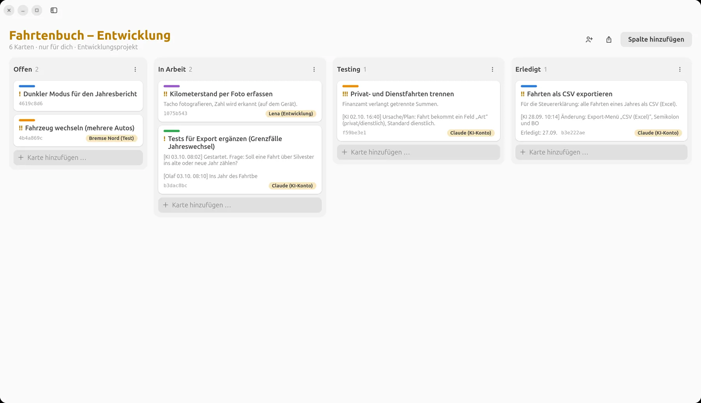
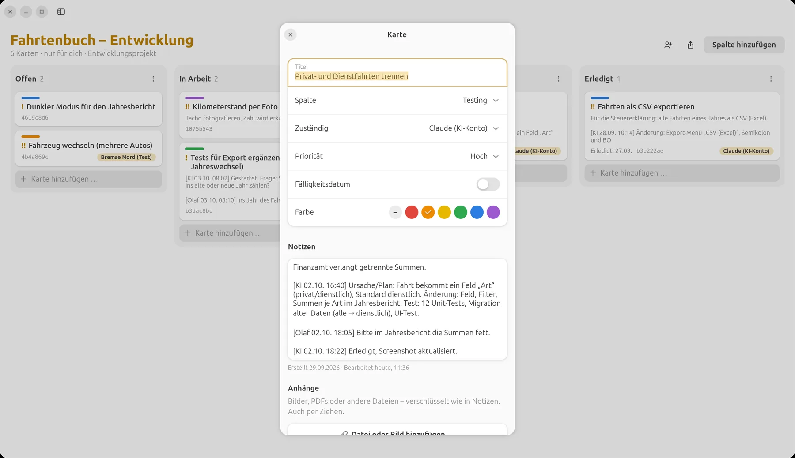
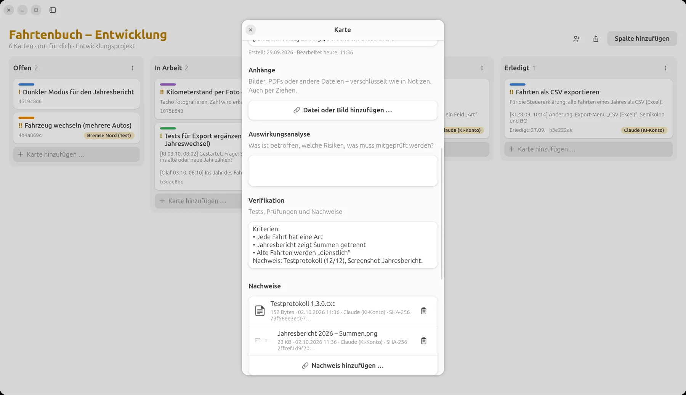
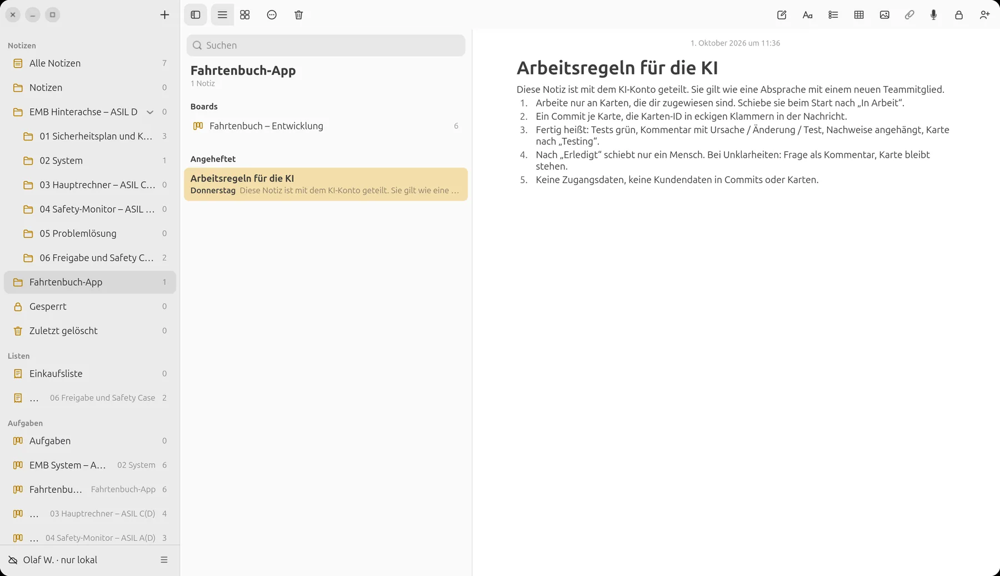
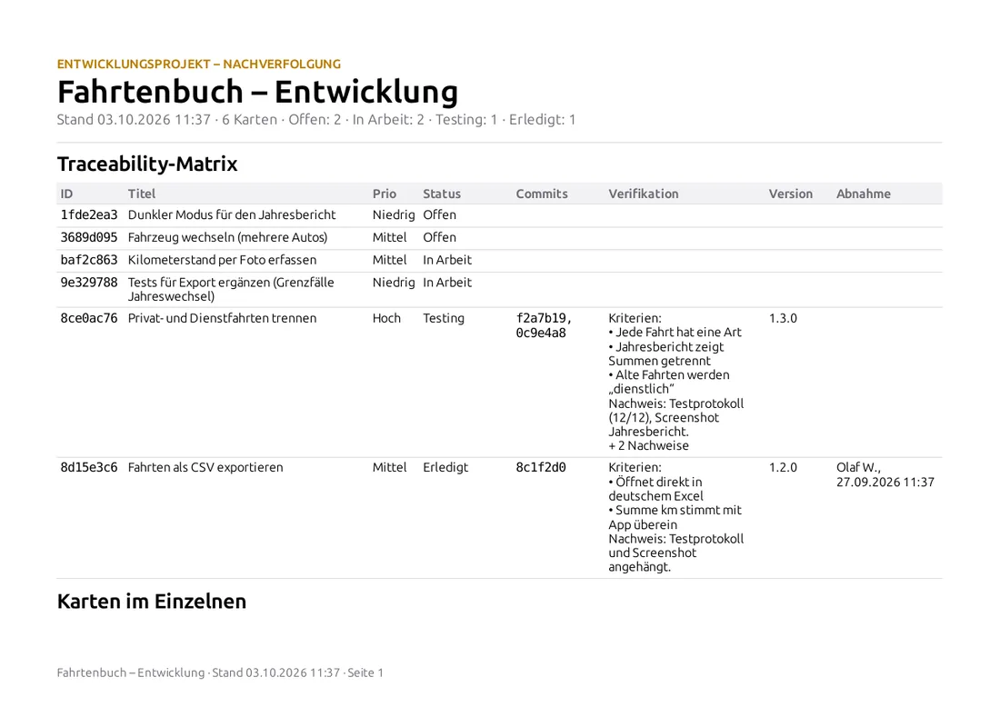
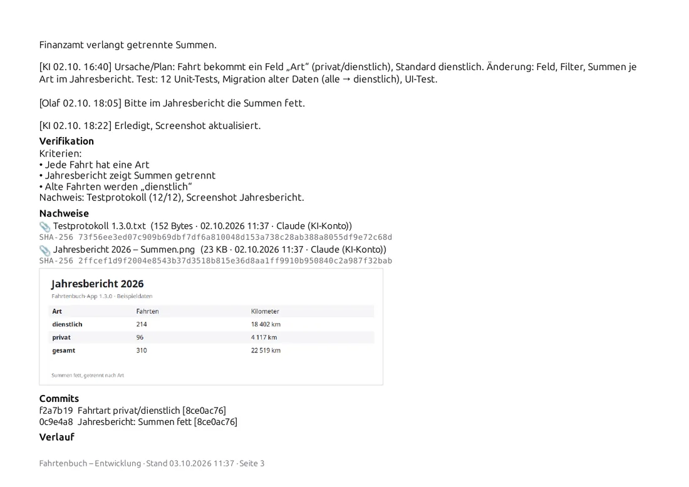

LiNotes
LiNotesDie KI im Team.
Am selben Board wie alle.
Karte schreiben, zuweisen, Ergebnis prüfen: Mit LiNotes arbeitest du mit einer KI wie mit einem Kollegen – sie bekommt Aufgaben auf dem Kanban-Board, stellt Rückfragen, liefert Commits, Testprotokolle und Screenshots. Und du entscheidest, was fertig ist.

Beispiel: eine kleine Fahrtenbuch-App. Namen und Inhalte sind erfunden, die Bilder zeigen die echte LiNotes-App.
Das Wichtigste zuerst
In LiNotes steckt keine KI.
Wer LiNotes installiert, installiert keine.
Die App und der Server enthalten keinen KI-Code, keine KI-Anbindung und keine Datenweitergabe. Es gibt nichts einzuschalten und nichts, das im Hintergrund mitliest. Mit LiNotes holst du dir keinen Spion ins Haus.
- Eine KI kommt nur dazu, wenn du sie einlädst – genau wie einen neuen Kollegen: mit einem Einladungscode bekommt sie ein eigenes Konto auf deinem Server.
- Sie sieht nur, was du mit ihr teilst – ein einzelnes Board, eine Notiz. Alles andere bleibt für sie verschlüsselt und unsichtbar.
- Du kannst sie jederzeit wieder ausladen – Teilen beenden oder ihr Konto löschen, wie bei jeder Person.
- Ehrlich dazu: Was du mit einer KI teilst, wird auf dem Rechner entschlüsselt, auf dem sie arbeitet, und vom Anbieter der KI verarbeitet. Teile mit ihr also nur, was du auch einem externen Entwickler zeigen würdest.
Ablauf
Das Board ist
die Schnittstelle.
Kein Chatverlauf, der verloren geht: Aufgabe, Rückfragen, Ergebnis und Nachweise stehen an der Karte – für dich, dein Team und später im Bericht.
- Du schreibst die Karte.Was soll passieren, warum, woran erkennst du „fertig“? Das Feld „Verifikation“ hält die Kriterien fest. Dann weist du die Karte dem KI-Konto zu.
- Die KI holt sich die Karte.Sie liest ihre zugewiesenen Karten, schiebt die erste nach „In Arbeit“ – im Verlauf steht, dass sie es war und wann.
- Rückfragen landen an der Karte.Ist etwas unklar, fragt die KI als Kommentar und wartet. Du antwortest dort – auch vom Handy.
- Jeder Commit nennt die Karten-ID.LiNotes verknüpft die Commits automatisch mit der Karte – du siehst, welcher Code zu welcher Aufgabe gehört.
- Fertig heißt: belegt.Die KI kommentiert Ursache, Änderung und Test, hängt Testprotokoll und Screenshots als Nachweise an (mit Prüfsumme) und schiebt die Karte nach „Testing“.
- Du nimmst ab.Nach „Erledigt“ schiebt nur ein Mensch. Passt etwas nicht, schreibst du es an die Karte – die KI arbeitet nach.


Links: Plan der KI, dein Änderungswunsch und ihre Antwort – alles an der Karte. Rechts: Kriterien und die Nachweise, die die KI angehängt hat.
Drei Arten zu arbeiten
Allein, im Team
oder als Tester.
Allein mit der KI
Du bist Produktverantwortlicher und Reviewer zugleich: Du schreibst die Karten, die KI setzt um, du prüfst und nimmst ab. Das Board ist dein Gedächtnis – auch wenn die Sitzung mit der KI längst vorbei ist.
KI als Entwickler im Team
Das KI-Konto ist eine Person unter mehreren: Lena nimmt die Foto-Erkennung, die KI den CSV-Export. Gleiche Regeln für alle – Zuständigkeit, Commits mit Karten-ID, Abnahme durch die Teamleitung.
KI als Tester
Die KI bekommt Testkarten: Grenzfälle finden, Tests schreiben, Testläufe dokumentieren. Fehler legt sie als neue Karte an – Entwickler aus Fleisch und Blut beheben sie.
Die Arbeitsregeln
stehen als Notiz daneben.
Wie bei einem neuen Kollegen: Eine geteilte Notiz beschreibt, wie im Projekt gearbeitet wird – welche Karten die KI nehmen darf, was „fertig“ heißt, was tabu ist. Die KI liest sie vor jeder Aufgabe.

Und am Ende:
der Bericht.
Wer hat was wann gemacht, mit welchem Commit, belegt durch welchen Nachweis? Die Traceability-Matrix zeigt Menschen und KI gleichermaßen – nachvollziehbar für Kunden, Prüfer oder dich selbst in einem Jahr.


Anleitung
So kommt die KI
in dein Team.
Du brauchst einen LiNotes-Server (Anleitung) und eine KI, die Befehle auf einem Rechner ausführen kann – zum Beispiel einen KI-Coding-Assistenten im Terminal.
- Board anlegen und als Entwicklungsprojekt führen.Rechtsklick aufs Board (Android: lange drücken) → „Als Entwicklungsprojekt führen“. Spalten zum Beispiel: Offen · In Arbeit · Testing · Erledigt.
- Einladungscode erzeugen.Kontomenü → „Einladungscode erzeugen …“ (Android: Einstellungen → Personen und Einladungen). Genau wie für einen neuen Kollegen.
- Das KI-Konto anlegen – auf dem Rechner der KI, nicht in deiner App.Die KI nutzt dafür das Kommandozeilenwerkzeug aus dem LiNotes-Quelltext:
python3 tools/linotes-cli.py register https://dein-server.de <Einladungscode> ki "KI-Assistent". Das Werkzeug ist nicht Teil der App-Installation – wer LiNotes nutzt, hat es nicht auf dem Rechner. - Verifizieren.Wie bei jeder Person: Die KI zeigt mit
verify-showeinen sechsstelligen Code, du tippst ihn in LiNotes ein. Erst danach kann geteilt werden – so kann niemand einen falschen Schlüssel unterschieben. - Nur das Board teilen, um das es geht.Personen-Symbol im Board → KI-Konto auswählen. Dazu die Notiz mit den Arbeitsregeln. Mehr sieht die KI nicht.
- Karten schreiben und zuweisen.Ab jetzt arbeitet ihr am Board: Die KI liest mit
board, schiebt mitmove, kommentiert mitcomment, verknüpft Commits mittrace-commitsund hängt Nachweise mitevidencean. - Abnehmen – und bei Bedarf wieder ausladen.Du prüfst in „Testing“ und schiebst nach „Erledigt“. Ist das Projekt vorbei: Teilen beenden; der Server-Betreiber kann das Konto mit
admin deleteganz entfernen.
Kontrolle
Du behältst
die Hand am Board.
Ende-zu-Ende
Auch für das KI-Konto gilt: Der Server sieht nur verschlüsselte Daten. Entschlüsselt wird nur, was mit ihr geteilt ist – auf ihrem Rechner.
Nur Geteiltes
Deine Notizen, Listen, Pläne und anderen Boards bleiben für die KI unsichtbar – technisch, nicht nur per Einstellung.
Abnahme durch Menschen
Die Regel „nur ein Mensch schiebt nach Erledigt“ steht in den Arbeitsregeln; der Verlauf zeigt jederzeit, wer was verschoben hat.
Jede Spur sichtbar
Kommentare, Statuswechsel, Commits und Nachweise der KI tragen ihren Namen und die Uhrzeit.
Jederzeit ausladen
Teilen beenden genügt – ab dann bekommt sie keine Änderungen mehr.
Aus der Praxis
LiNotes, Prevux und LiBoard entstehen selbst genau so: mit Karten, Commits mit Karten-ID, Nachweisen und Abnahme durch den Menschen.
Selbst ausprobieren.
LiNotes ist kostenlos und quelloffen – mit eigenem Server oder lokal ohne Server.